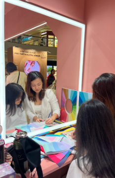

Discover your
true colours
Personal colour analysis and corporate image workshops in Malaysia
— revealing the palette that's been yours all along.
Empowered Over 200 Individuals
Through engaging events and personalized one-on-one sessions
Certified Personal Colour Analyst
Professionally trained and certified under a South Korean expert
Senior Corporate Consultant
HRD Corp–accredited Trainer (Train-the-Trainer certified)

Why colour analysis?
Look more alive, effortlessly
The right colours brighten your complexion, reduce under-eye shadows, and harmonise your natural features — no extra effort needed.
Bring colour to your next event
From product launches to appreciation parties, colour analysis makes a memorable guest experience — personal, interactive, and on-brand.
Strengthen your professional image
Colour shapes how others perceive you before you speak. Individuals and teams who dress intentionally project more confidence and credibility.
Build a wardrobe that works
When every piece shares your palette, everything coordinates — fewer purchases, more outfits, and no more buyer's remorse.
How draping works

Discover
We begin with a conversation about you — your skin tone, hair, eyes, and the colours you're drawn to.
Drape
Fabric swatches in each seasonal palette are held near your face, revealing which colours illuminate you.
Reveal
Your personal palette is unveiled — a curated set of hues, organised by season, to guide every colour choice.
Real results
"Our leadership team hasn't stopped talking about the workshop. The confidence shift was visible in our next client presentation."— Head of HR, Financial Services Firm
"I used to buy clothes that looked great on the hanger but drained my face. Now every piece in my wardrobe works — shopping is effortless."— Sarah L., Kuala Lumpur
"Evelynn ran a session for our 30-person sales team. The engagement was unlike any team building we've done before."— Director, Tech Company
Services
Colour programmes for every team size
From retail event activations to intimate drape parties and large team workshops — tailored to your headcount and goals.
- Retail event activations (any pax)
- Small group drape parties (4–12 pax)
- Team workshops, HRDC-claimable (50–100 pax)
- Custom quote based on format & duration
Discover the colours that make you glow
A gentle, one-on-one draping experience that transforms how you see yourself — and how the world sees you.
- Full seasonal colour analysis
- Personalised colour palette card
- Makeup shade recommendations
- Wardrobe colour planning guide
Frequently Asked Questions
What should I wear to my draping session?
Please wear neutral clothing with an open neckline so the drapes don't compete with your outfit. We recommend wearing white or removing bulky layers, as we need to observe your natural skin undertones closely next to the fabric.
Can I wear makeup to the session?
For the most accurate results, we require you to arrive with a completely bare face. Foundation, bronzer, or tinted sunscreen can artificially alter your overtone and skew the results of the draping.
How long does a personal analysis take?
A standard 1-on-1 personal colour analysis takes approximately 90 minutes. This gives us ample time to evaluate all 12 sub-seasons, discuss makeup and jewellery shades, and walk through your personalised wardrobe palette.
Do you offer group sessions or corporate events?
Yes! We offer "Drape Parties" for small groups of up to 4 people. We also host half-day and full-day corporate workshops for larger teams focused on professional image and uniform styling.
Ready to discover
your colours?
Whether it's just you or your whole team — let's find your palette.